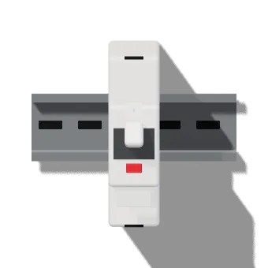

أساسيات الكهربا · الدرس 7 من 13
الكهربا مش بتدّي فرصة تانية. الدرس ده أهم درس في الكورس: إزاي تحمي نفسك، إزاي تعرف الفاز بمفك الاختبار، قاطع التسريب بيحميك إزاي، والعدّة اللي لازم تبقى في شنطتك.
افصل القاطع مش مفتاح اللمبة. والكهربا شغّالة: قياس الفولت والكلامب بس.
ماتلمسش السن أبدًا، وماتفكّش بيه حاجة تقيلة.

دوس زرار T على قاطع التسريب مرة كل شهر.
العدّة المعزولة الحقيقية مكتوب عليها 1000V وعلامة المثلث المزدوج.
قاطع التسريب للحماية الإضافية للأشخاص بيبقى 30mA على حسب IEC 60364 و IEC 61008. العدّة المعزولة على حسب IEC 60900 (1000V). تقدّمك بيتسجّل على الجهاز ده بس.
© 2026 LearnElectricals. كل الحقوق محفوظة. الموقع مش تابع لأي شركة من الشركات المذكورة (زي Siemens و Allen-Bradley و Delta و Schneider وغيرهم)، والأسماء والعلامات التجارية ملك أصحابها، ومستخدمة بس عشان نشرح الأجهزة.